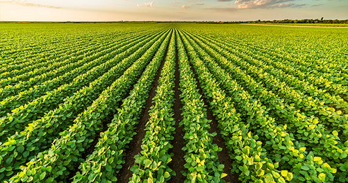
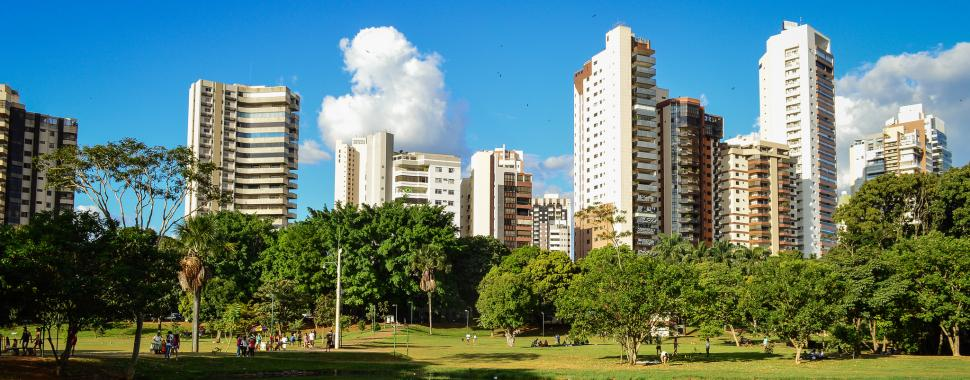
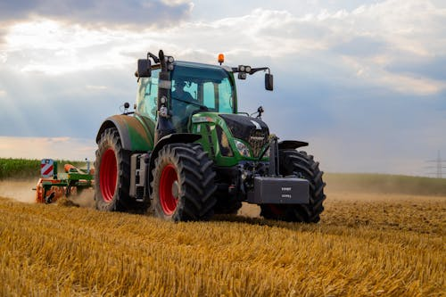
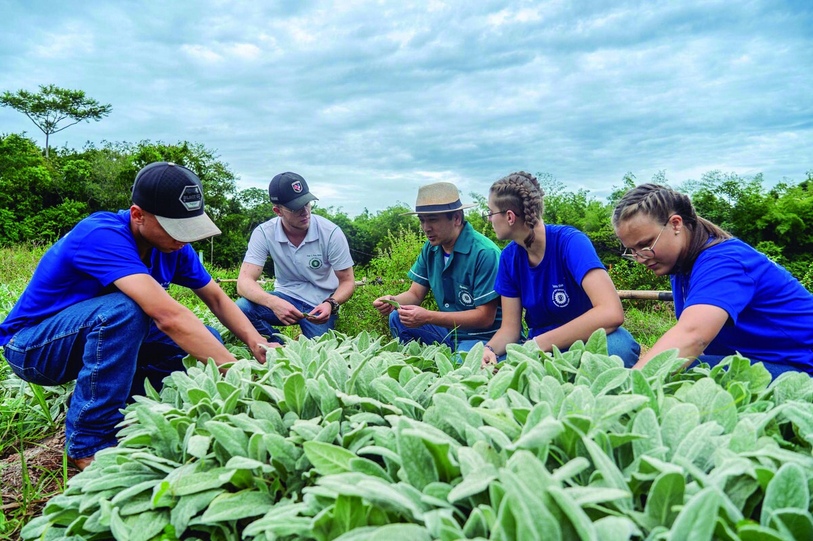
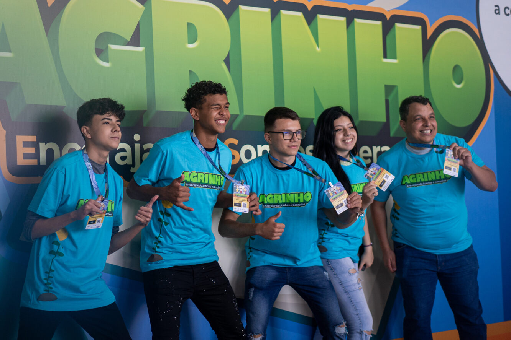
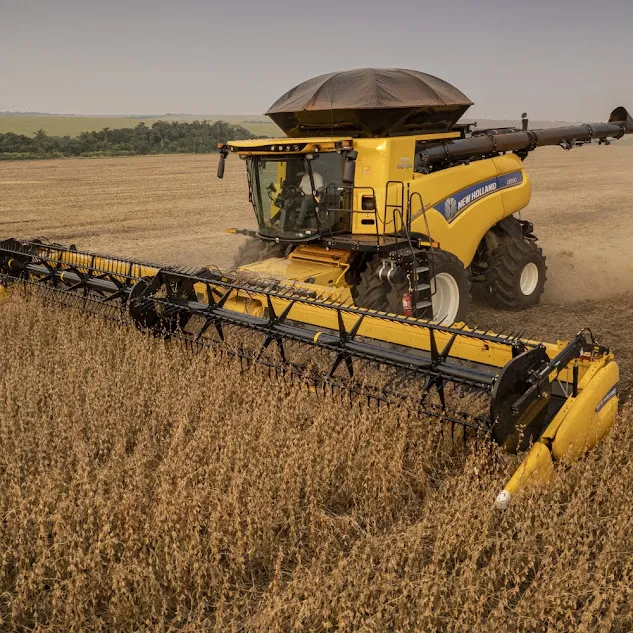

Sobre o Projeto Agrinho

O Agrinho é um dos maiores programas de responsabilidade social do Brasil. Em 2025, o tema é "Festejando a Conexão Campo-Cidade", destacando a importância de valorizar os saberes e culturas do meio rural e urbano em um só movimento. O objetivo é estimular a aprendizagem, o desenvolvimento de habilidades e a consciência da interdependência entre os meios urbano e rural.
Atividades
- Realização de projetos de robótica
- Desenvolvimento de habilidades de cooperação
- Promoção da integração entre campo e cidade através da tecnologia.
- Exposições tecnológicas sobre agricultura e inovação
Galeria de Fotos






Linha do Tempo
- História do Agrinho: Em 30 anos de atividade, o Agrinho vem impactando a formação das novas gerações do campo e da cidade. A iniciativa leva para as salas de aula do Paraná uma abordagem diferenciada de temas complementares à vivência escolar, como cidadania, saúde, meio ambiente e ética, propiciando o despertar da consciência junto às futuras gerações de cidadãos paranaenses.No ano passado, o Programa Agrinho mobilizou mais de 1,3 milhão de participantes de todas as regiões do Paraná. Naquela edição, também houve a quebra de um recorde com a entrega de 2.578 prêmios. Ao todo, 3.741 unidades escolares aderiram ao programa do Sistema FAEP, entre escolas estaduais, municipais, particulares, colégios agrícolas e Apaes.